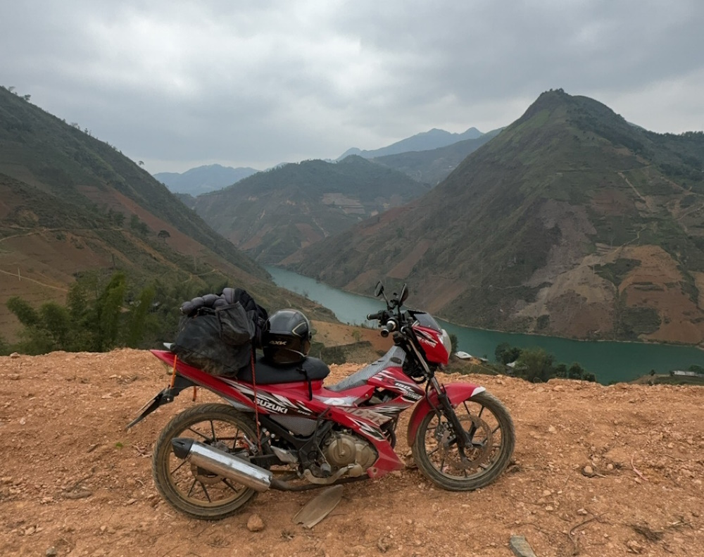
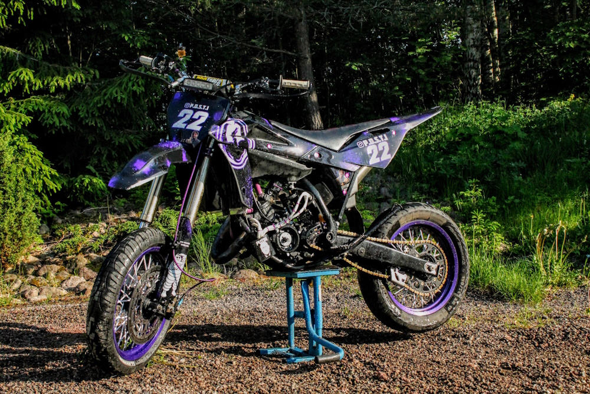
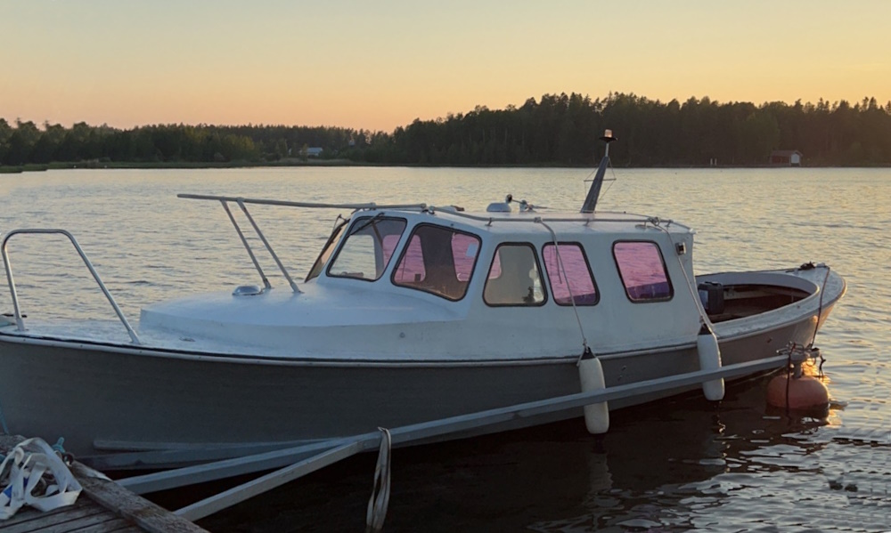

Olen nuoresta iästäni huolimatta jo kokenut maailmanmatkaaja. Olen käynyt 32 eri maassa ja viidellä eri mantereella. Tällä hetkellä olen ollut neljä kuukautta kiertelemässä kaakkois-aasiaa moottoripyörällä.
Olen ajanut motocrossia kohta 13-vuotta ja lisäksi kelkkailu on lähellä sydäntä. Olen koko pienen ikäni pyörinyt erilaisten moottorivehkeiden parissa ja luonnollisesti tutuksi on tullut myös niiden korjailu ja rakentelu. Ensimmäinen isompi projektini oli 14-vuotiaana hankittu Husqvarna wre 125cc, josta rakensin näyttelykuntoisen ja huomattavasti tehokkaamman version. 
Kotkalaisena luonnollisesti omistan vanhan, vuonna 1959 Pyhtään Kaunissaaressa veistetyn meriläisen. Mikäs sen parempaa, kuin ajella saareen saunomaan kesäiltana.
